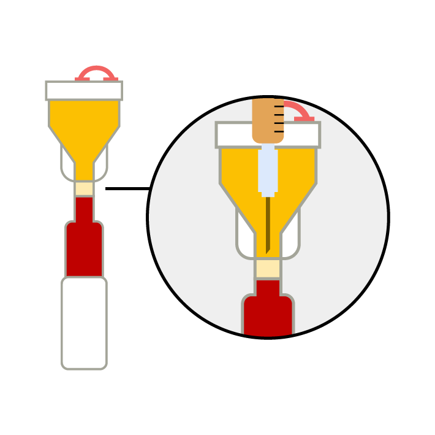
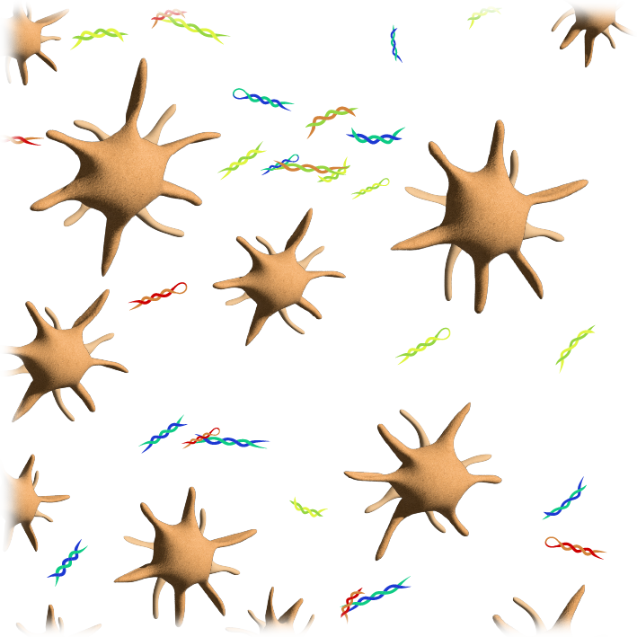
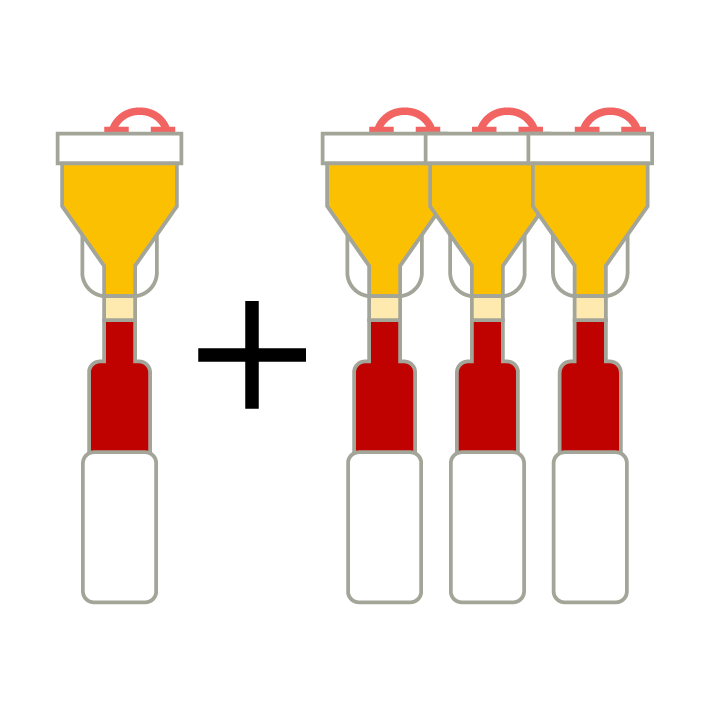

Platelet RICH Plasma
by an ADVANCED SINGLE STEP procedure
by an ADVANCED SINGLE STEP procedure

Maximum Concentration
(5x to 9x Platelet Concentration)

Optimized Cell Viability
(High Survival Rate)

High-Volume Capacity
(Up to 16ml of PRP)

A simple yet highly accurate extraction process that minimizes user error.
Seamlessly integrates with most standard centrifuges (operating over 1900 RCF).
Delivering a consistent 5x to 9x concentration to meet the true academic benchmark for autologous therapy.
Interested in upgrading your cellular yields? Request a private, 5-minute online introduction at a date and time that suits you best. Simply select your preferred video platform (Zoom, Teams, or FaceTime) using the form below, and a product specialist will walk you through our single-spin high concentration clinical protocols.
Standard Australian workflows are often designed for low-yield systems. Access our proprietary High-Concentration PRP Protocols for exact injection volumes and structural workflows, alongside supporting full-text academic literature.
The best way to evaluate the Y-Cell system is to see it in action. We offer on-site demonstrations to clarify the critical differences between PRP, PPP, and PRF. Our team provides comprehensive technical training to ensure your staff can achieve optimal results with every patient.
We are committed to helping medical professionals upgrade their regenerative therapies. Rather than just providing devices and equipment, we act as a dedicated clinical resource, sharing advanced insights from international experts and troubleshooting protocols to find the answers your practice needs.
Our expertise spans across multiple specialties, including: